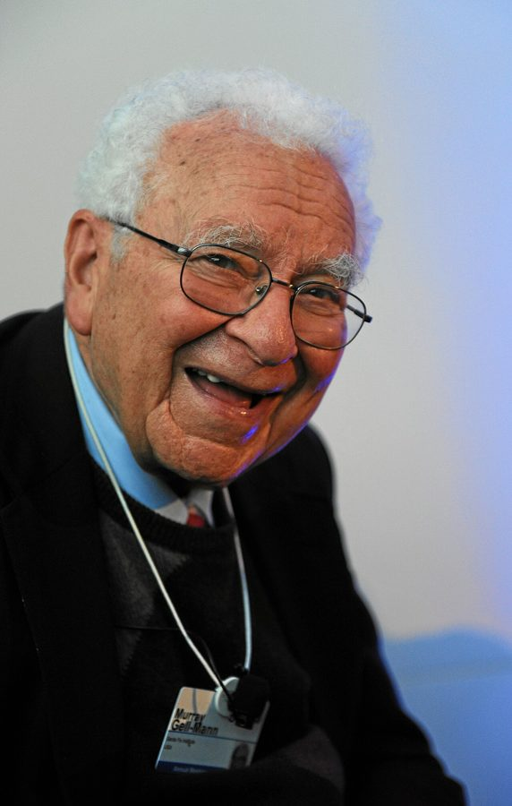
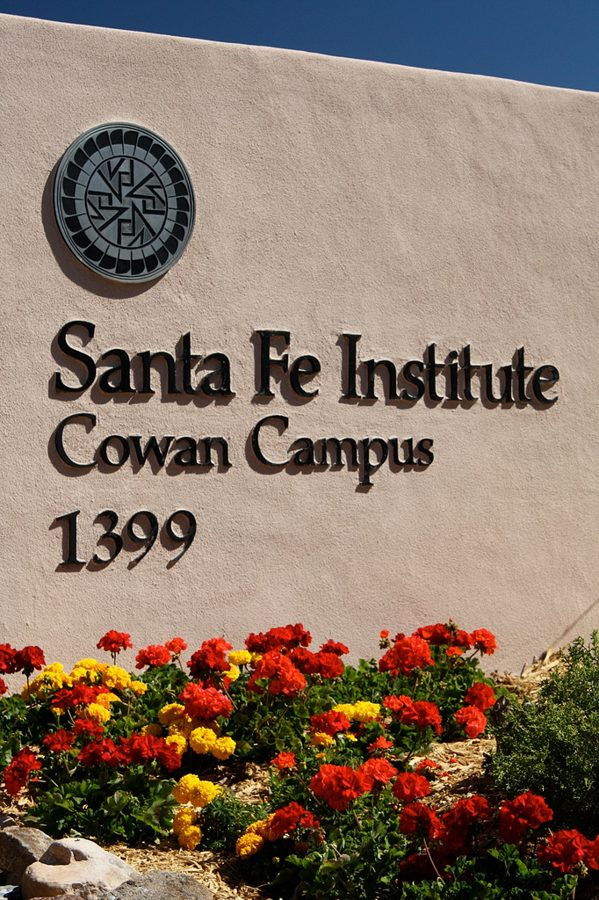
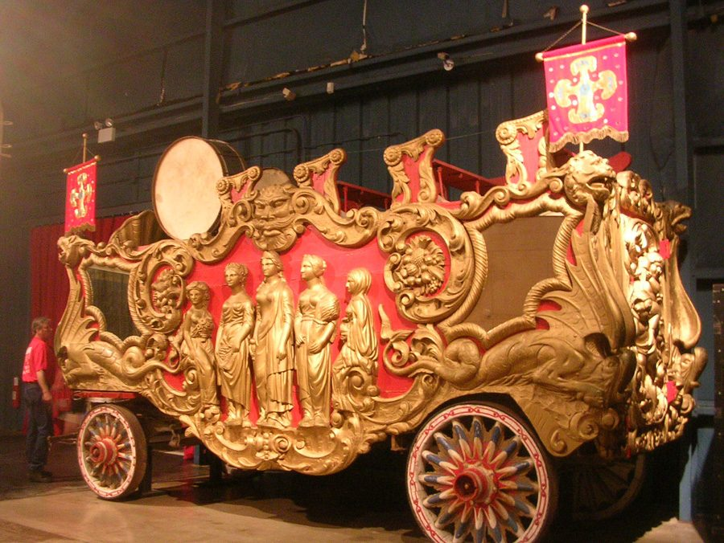
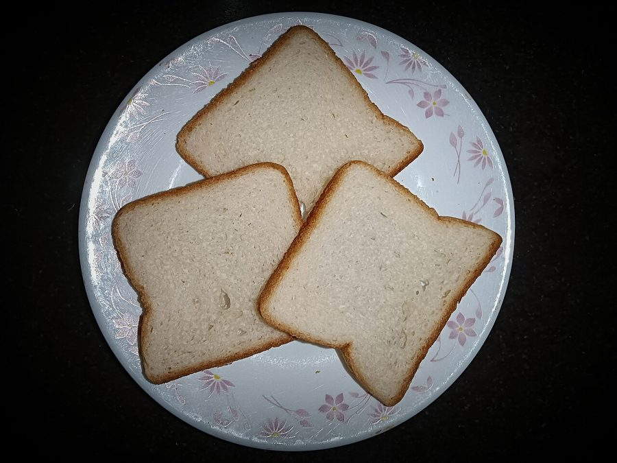

秘鲁首都利马市中心广场上的市政厅。第 8 段说盖尔曼后来在利马得了一把「城市钥匙」。
Pierre André Leclercq，CC BY-SA 4.0，维基共享资源
盖尔曼收藏古代文物，第 8 段说其中有走私入境的，被海关查了。key to the city 是市长颁给贵客的礼节性荣誉，一把装饰用的大钥匙，开不了任何门。
Physics Today 是美国物理学界的月刊。第 10 段整段摘自盖尔曼登在上面的悼文，书里排成缩进的引文。I 是盖尔曼，Richard 是费曼，. . . 是作者删掉的部分。那篇文章的标题里有个熟面孔：The Guy in the Office Down the Hall。
本站示意图。作者管这叫 mixed review：影评里「好坏参半」的那种评价。
盖尔曼后来去了哪

盖尔曼，2012 年在达沃斯，82 岁。当时的身份是圣菲研究所的研究员。
World Economic Forum，CC BY-SA 2.0，维基共享资源

圣菲研究所的大门。
Go2placitas，CC BY-SA 3.0，维基共享资源
第 11 段末尾说他住在新墨西哥州的圣菲（Santa Fe）。他是那里的圣菲研究所（Santa Fe Institute）的创办人之一，这家研究所专门研究「复杂系统」。书里说的「现在」是 2003 年前后；盖尔曼 2019 年在圣菲去世。
施瓦茨的三个荣誉
MacArthur fellowship：麦克阿瑟基金会的奖金，美国媒体叫它「天才奖」，不用申请，一笔钱分几年给，随便怎么花。又是 fellowship 这个词，和友谊无关。
National Academy of Sciences：美国国家科学院，当选院士是终身荣誉。
Dannie Heineman Prize：数学物理领域的奖，由第 14 段写的那两个学会合办。
两句口头禅：bandwagon 和 sliced bread

真正的 bandwagon：马戏团进城游行时拉乐队的花车，现藏佛罗里达的马戏博物馆。
Roger Wollstadt，CC BY-SA 2.0，维基共享资源
jump on the bandwagon：花车热热闹闹开过来，路人跳上去跟着走。意思是见一件事火了就跟风加入，略带贬义。

切片面包。
Saral Shots，CC0，维基共享资源
美国人夸一样东西好，说 the greatest thing since sliced bread（自切片面包以来最棒的发明）。预先切好的面包是 1928 年才开始卖的，当年算大发明。第 13 段那位行政人员把这句话拆开用了：「发明切片面包」就是「做出了不起的东西」。
… string theory, the laughingstock of physics, became …
笑柄
jump on the bandwagon
… particle theorists jumped on the bandwagon, writing …
跟风加入
见上面背景里的花车。
as rare as … just as rare
… As rare as it had been to …
从前……有多罕见，现在……就有多罕见
前半句说找到做弦理论的人，后半句说找到不做的人。注意后面那个 not。
a real job
… to get Schwarz “a real job,” as …
一份「正经工作」
指正式教职。引号是因为施瓦茨此前十多年都只是没有教职的研究员。
invent sliced bread
… this man has invented sliced bread, but …
做出了了不起的东西
见上面背景。
a work in progress
… is still a work in progress, far …
还没做完的东西
程序员说的 WIP 就是它。far from proven = 远没有被证实。
fare
… is how he will fare without the …
过得怎么样，应付得如何
动词。和「车费」是同一个词的另一个意思。这句是玩笑：没了 Helen，他怎么办。
well into her seventies
… Tuck, who, well into her seventies, has …
七十好几了
well into = 已经深入到……。不是「健康地」。
And why not?
… he respected Schwarz. And why not? If …
这有什么奇怪的？
反问：他当然会尊重。
follow the crowd
… If anyone wasn’t following the crowd, it …
随大流
If anyone …, it was John：要说有谁不随大流，那就是 John。强调句式。
dismiss
… hear people’s ideas easily dismissed, or …
不当回事，一口否定
不是「解雇」「解散」。
be committed to
… of being truly committed to whatever …
全心投入
程序员的 commit 是同一个词：交出去，不留退路。
go through
… I was going through musty boxes …
一样一样地翻
上一章的 go through college 是「读完」，这里是「翻查」。musty = 有霉味的。
were to form
… tapes which were to form the …
后来成了
was/were to do：从过去看将来，「日后会……」。
some twenty years
… lay dormant for some twenty years. …
大约二十年
数字前的 some = 大约。lay dormant = 一直沉睡着，lay 还是 lie 的过去式。
miss
… those years, I missed Feynman, the …
想念
不是「错过」。下一句 I missed the person I was：想念从前的自己。
gruff
… Feynman, the gruff, reluctant teacher whose …
粗声粗气的
reluctant teacher：不情愿当老师的人。
terminal
… spirit even terminal cancer couldn’t dampen. …
晚期的，治不好的
不是「终端」。dampen = 打湿，引申为压低情绪。
with his whole life before him
… with his whole life before him. …
一辈子还长着呢
before = 在前面等着。
epilogue
… In his epilogue, Feynman stated his …
后记，结语
这一章本身也是 epilogue。
impart
… for the worldview he imparted in those …
传授
further
… that I hope I have furthered in …
推进，往前推了一步
动词，不是「更远」。
get the most out of
… how to get the most out of what …
把……用到极致
pass on
… years since he’s passed on, I’ve …
去世
die 的委婉说法，也说 pass away。
值得停下来的句子
Within months string theory, the laughingstock of physics, became string theory, the hottest thing in physics.
— 第 12 段。本站译：几个月之内，「物理学的笑柄」弦理论，变成了「物理学里最热门的东西」弦理论。
主干是 string theory became string theory，主语和表语是同一个词，各带一个同位语。作者故意这么写：理论一个字没变，变的只是别人给它贴的标签。这和上一章的结论是一回事。
I wanted most to give you some appreciation of the wonderful world and the physicist’s way of looking at it.
— 第 18 段，作者引的费曼《物理学讲义》后记。本站译：我最想做的，是让你们多少领略一点这个奇妙的世界，和物理学家看它的方式。
appreciation 在这里不是「感谢」，是「懂得欣赏」。the physicist’s way 用了定冠词加单数，泛指「物理学家这一类人」。作者接下来正是抓住这一点说费曼过谦：他教的不是随便哪个物理学家的眼光，是他自己的。
检查一下理解
先在心里答，再点开。答错的那题，回书里把对应段落再读一遍。
1. 第 4、5 段两次出现的 his final discovery，指什么？
指「死是什么感觉」。费曼把临终也当成一次观察。第 5 段那句 He had made his final discovery 就是「他去世了」的另一种说法，没有别的科学发现。
2. 第 7 段 “He had a good excuse.” 是当真还是讽刺？
两样都有。理由确实硬：出门前家里被持枪的联邦探员搜查。但把这叫 a good excuse 是冷幽默，作者还特地让这一句单独成段。第 8 段的结尾又翻一次：被查的人最后在秘鲁受了表彰。
3. 第 10 段里的 “I” 是谁？“Richard” 是谁？
I 是盖尔曼，Richard 是费曼。整段是盖尔曼悼文的摘录，不是作者的话，也不是费曼的话。作者自己一直叫他 Feynman；直呼 Richard 的是盖尔曼。